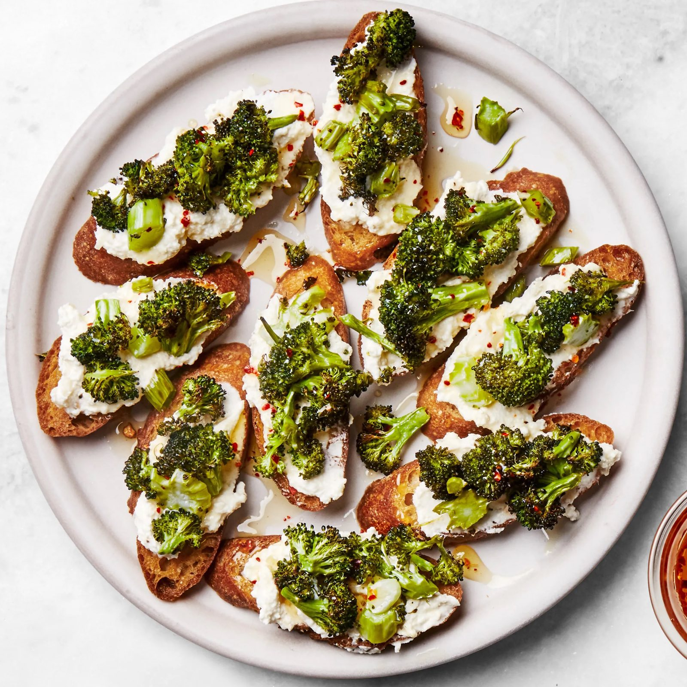
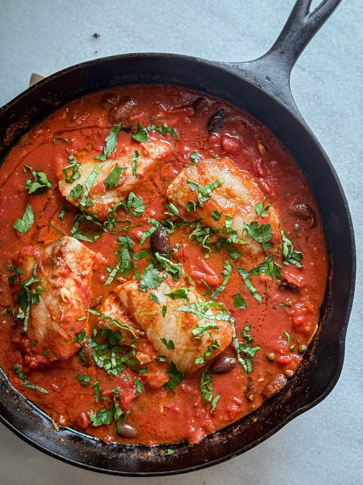
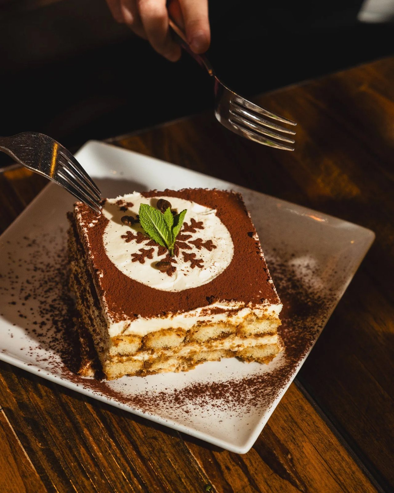
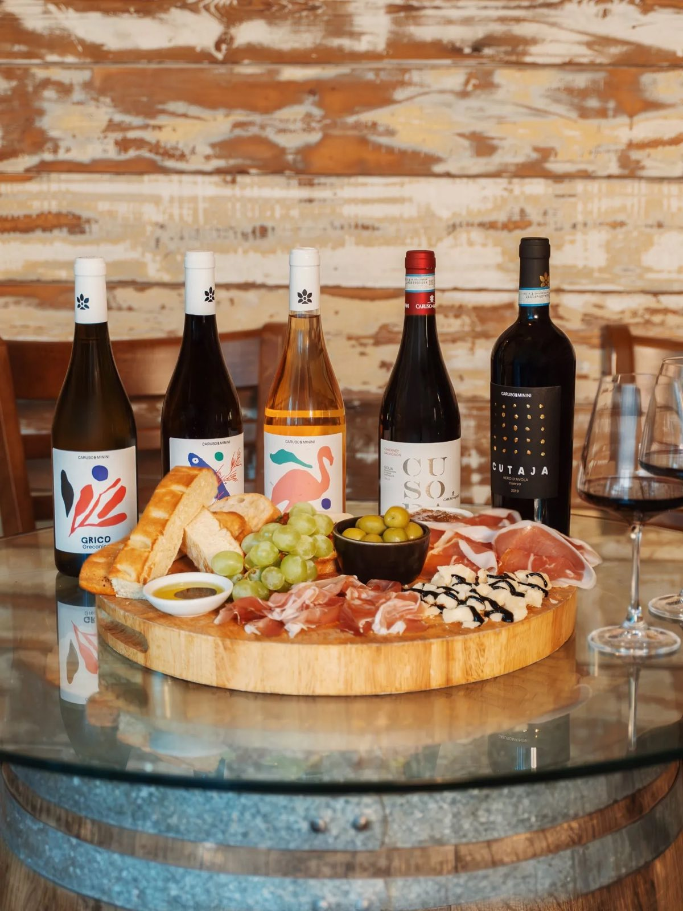

Il Menù
Un percorso, non una lista.
Filetto di manzo battuto a coltello, scaglie di Parmigiano 30 mesi, tartufo nero.
Burrata artigianale, pomodorini confit, basilico, olio extravergine di Puglia.
Vitello cotto a bassa temperatura, salsa tonnata classica, capperi di Pantelleria.
Capesante scottate al burro, purea di topinambur, nocciole tostate, erba cipollina.
Tonno rosso battuto al coltello, avocado, lime, sesamo nero, salsa allo yuzu.
Pasta fresca all'uovo, burro di malga, tartufo nero pregiato grattugiato al tavolo.
Riso Carnaroli, midollo, zafferano di Navelli, riduzione di Barolo.
Ripieno di tre arrosti, burro nocciola, salvia, Parmigiano stravecchio.
Pasta fresca larga, ragù di cinghiale brasato otto ore, bacche di ginepro.
Gnocchi fatti in casa, fonduta di Gorgonzola DOP, noci caramellate.
Branzino selvaggio in crosta di sale, verdure di stagione, salsa al limone di Amalfi.
Razza Chianina, cottura alla brace, rosmarino, olio extravergine toscano. Per due persone.
Stinco di vitello brasato otto ore, gremolada, risotto allo zafferano.
Costoletta di vitello impanata e fritta nel burro chiarificato, insalata di rucola.
Petto d'anatra scottato, riduzione all'arancia amara, purea di sedano rapa.
Savoiardi al caffè, mascarpone di Lodi, cacao amaro, ricetta originale del 1987.
Panna cotta alla vaniglia del Madagascar, coulis di frutti di bosco freschi.
Cialda croccante, ricotta di pecora, canditi, pistacchio di Bronte.
Torta al cioccolato fondente e mandorle, senza farina, gelato alla vaniglia.
Semifreddo al torrone di Cremona, croccante di nocciole, salsa al caramello.
Nebbiolo in purezza, invecchiamento 5 anni in botte grande.
Metodo classico, Chardonnay e Pinot Nero, sboccatura tardiva.
Uve appassite, corpo pieno, note di ciliegia matura e spezie dolci.
Sangiovese Grosso, invecchiamento minimo 5 anni, struttura e tannini eleganti.
Bianco sardo minerale, note di agrumi e macchia mediterranea, servito fresco.

.jpeg)


